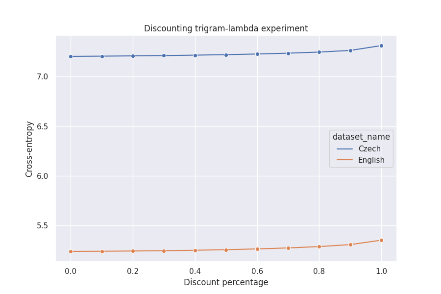

Problem statement: This task will show you the importance of smoothing for language modeling, and in certain detail it lets you feel its effects.
First, you will have to prepare data: take the same texts as in the previous task, i.e.
TEXTEN1.txt and TEXTCZ1.txt
Prepare 3 datasets out of each: strip off the last 20,000 words and call them the Test Data, then take off the last 40,000 words from what remains, and call them the Heldout Data, and call the remaining data the Training Data.
Here comes the coding: extract word counts from the training data so that you are ready to compute unigram-, bigram- and trigram-based probabilities from them; compute also the uniform probability based on the vocabulary size. Remember (T being the text size, and V the vocabulary size, i.e. the number of types - different word forms found in the training text):
p_0(w_i) = 1/V \\ p_1(w_i) = c_1(w_i)/T \\ p_2(w_i | w_{i-1}) = c_2(w_{i-1}, w_i) / c_1(w_{i-1}) \\ p_3(w_i|w_{i-2}, w_{i-1}) = c_3(w_{i-2}, w_{i-1}, w_i) / c_2(w_{i-2}, w_{i-1})
Be careful; remember how to handle correctly the beginning and end of the training data with respect to bigram and trigram counts.
Now compute the four smoothing parameters (i.e. “coefficients”, “weights”, “lambdas”, “interpolation parameters” or whatever, for the trigram, bigram, unigram and uniform distributions) from the heldout data using the EM algorithm. (Then do the same using the training data again: what smoothing coefficients have you got? After answering this question, throw them away!) Remember, the smoothed model has the following form:
p_s(w_i | w_{i-2}, w_{i-1}) = l_0 p_0(w_i) + l_1 p_1(w_i) + l_2 p_2(w_i | w_{i-1}) + l_3 p_3 (w_i | w_{i-2}, w_{i-1})
where:
l_0 + l_1 + l_2 + l_3 = 1
And finally, compute the cross-entropy of the test data using your newly built, smoothed language model. Now tweak the smoothing parameters in the following way: add 10%, 20%, 30%, …, 90%, 95% and 99% of the difference between the trigram smoothing parameter and 1.0 to its value, discounting at the same time the remaining three parameters proportionally (remember, they have to sum up to 1.0!!). Then set the trigram smoothing parameter to 90%, 80%, 70%, … 10%, 0% of its value, boosting proportionally the other three parameters, again to sum up to one. Compute the cross-entropy on the test data for all these 22 cases (original + 11 trigram parameter increase + 10 trigram smoothing parameter decrease). Tabulate, graph and explain what you have got. Also, try to explain the differences between the two languages based on similar statistics as in the Task No. 2, plus the “coverage” graph (defined as the percentage of words in the test data which have been seen in the training data).
Attach your source code commented in such a way that it is sufficient to read the comments to understand what you have done and how you have done it.
If we (by mistake) were to optimize the lambda parameters for the training dataset (the one, which we used to learn the p_i(w | h)), then it is optimal for the highest-order ngram term to be 1.0 and for the remaining parameters to be 0. That is what we actually observe in practice.
We demonstrate this by using the TEXTCZ1 train set (instead of the held-out set) to estimate the p_i(w | h) in the EM algorithm. Just after 10 iterations of the EM algorithm the l_3 was 0.99998. This is obviously undesirable behavior, as we aren’t using the information from the lower-order ngram models.
Initial lambdas: 0.25, 0.25, 0.25, 0.25
1. cross-entropy: 1.758013376 lambda-delta: 0.532517 lambdas: 0.00022 0.01187 0.2054 0.78252
2. cross-entropy: 0.812590091 lambda-delta: 0.138522 lambdas: 0.0 0.00028 0.07868 0.92104
3. cross-entropy: 0.706223000 lambda-delta: 0.050035 lambdas: 0.0 1e-05 0.02892 0.97107
4. cross-entropy: 0.672579202 lambda-delta: 0.018393 lambdas: 0.0 0.0 0.01053 0.98947
5. cross-entropy: 0.660638379 lambda-delta: 0.006707 lambdas: 0.0 0.0 0.00383 0.99617
6. cross-entropy: 0.656336310 lambda-delta: 0.002437 lambdas: 0.0 0.0 0.00139 0.99861
7. cross-entropy: 0.654779542 lambda-delta: 0.000885 lambdas: 0.0 0.0 0.0005 0.9995
8. cross-entropy: 0.654215222 lambda-delta: 0.000321 lambdas: 0.0 0.0 0.00018 0.99982
9. cross-entropy: 0.654010521 lambda-delta: 0.000117 lambdas: 0.0 0.0 7e-05 0.99993
10. cross-entropy: 0.653936249 lambda-delta: 4.2e-05 lambdas: 0.0 0.0 2e-05 0.99998
Test cross-entropy: 33.82484666483367When we evaluate the model on the test set, we get a ridiculously high cross-entropy (33.8) as a result, because the test set contains trigrams (bigrams, unigrams) unseen in the train set and the lower-order lambdas are almost zero.
The unsmoothed model, that uses only l_3, basicallly overfits the training set, and introducing the smoothing lower-order terms adjusted according to the heldout dataset is a form of regularization.
Now we (correctly) use the heldout dataset to learn the lambda parameters.
The stopping criteria parameter epsilon was set to 0.0001.
Initial lambdas: 0.25, 0.25, 0.25, 0.25
1. cross-entropy: 7.651261921 lambda-delta: 0.153616 lambdas: 0.28282 0.38835 0.23244 0.09638
2. cross-entropy: 7.536746013 lambda-delta: 0.036443 lambdas: 0.26606 0.4248 0.23562 0.07353
3. cross-entropy: 7.529818036 lambda-delta: 0.011971 lambdas: 0.25785 0.43677 0.23903 0.06636
4. cross-entropy: 7.528870921 lambda-delta: 0.004076 lambdas: 0.25464 0.44084 0.24097 0.06354
5. cross-entropy: 7.528719484 lambda-delta: 0.001384 lambdas: 0.25346 0.44223 0.24198 0.06234
6. cross-entropy: 7.528693149 lambda-delta: 0.000535 lambdas: 0.25303 0.44268 0.24248 0.06181
7. cross-entropy: 7.528688227 lambda-delta: 0.00025 lambdas: 0.25288 0.44283 0.24273 0.06156
8. cross-entropy: 7.528687249 lambda-delta: 0.000123 lambdas: 0.25283 0.44287 0.24285 0.06145
9. cross-entropy: 7.528687044 lambda-delta: 6.1e-05 lambdas: 0.25281 0.44287 0.24291 0.0614
Test cross-entropy: 7.204565327721297Initial lambdas: 0.25, 0.25, 0.25, 0.25
1. cross-entropy: 5.325801066 lambda-delta: 0.140675 lambdas: 0.13593 0.26064 0.39068 0.21276
2. cross-entropy: 5.232961843 lambda-delta: 0.060294 lambdas: 0.10981 0.26255 0.45097 0.17667
3. cross-entropy: 5.217895969 lambda-delta: 0.026864 lambdas: 0.10224 0.264 0.47783 0.15593
4. cross-entropy: 5.214376536 lambda-delta: 0.01331 lambdas: 0.09973 0.26463 0.49114 0.1445
5. cross-entropy: 5.213378311 lambda-delta: 0.007147 lambdas: 0.09884 0.26475 0.49829 0.13812
6. cross-entropy: 5.213067638 lambda-delta: 0.004023 lambdas: 0.09852 0.26466 0.50231 0.13451
7. cross-entropy: 5.212966123 lambda-delta: 0.002322 lambdas: 0.09841 0.26452 0.50464 0.13243
8. cross-entropy: 5.212932027 lambda-delta: 0.001357 lambdas: 0.09839 0.26439 0.50599 0.13123
9. cross-entropy: 5.212920388 lambda-delta: 0.000799 lambdas: 0.09838 0.2643 0.50679 0.13053
10. cross-entropy: 5.212916378 lambda-delta: 0.000471 lambdas: 0.09839 0.26423 0.50726 0.13012
11. cross-entropy: 5.212914987 lambda-delta: 0.000279 lambdas: 0.0984 0.26419 0.50754 0.12988
12. cross-entropy: 5.212914504 lambda-delta: 0.000165 lambdas: 0.0984 0.26416 0.50771 0.12973
13. cross-entropy: 5.212914335 lambda-delta: 9.8e-05 lambdas: 0.0984 0.26414 0.5078 0.12965
Test cross-entropy: 5.240459086269674We can see, that the test cross-entropy is now much lower and much closer to the entropy we got in the part 1 of this assignment.
In this experiment, we gradually increase the proportion of the trigram lambda l_3
| l_3 boost factor | cross entropy (English) | cross entropy (Czech) |
|---|---|---|
| 0.00 | 5.240459 | 7.204565 |
| 0.10 | 5.247932 | 7.212605 |
| 0.20 | 5.277528 | 7.259792 |
| 0.30 | 5.325791 | 7.332456 |
| 0.40 | 5.393288 | 7.429382 |
| 0.50 | 5.483508 | 7.554353 |
| 0.60 | 5.603860 | 7.716444 |
| 0.70 | 5.769358 | 7.934368 |
| 0.80 | 6.014680 | 8.251472 |
| 0.90 | 6.451581 | 8.807459 |
| 0.95 | 6.899253 | 9.371758 |
| 0.99 | 7.953536 | 10.693249 |
We see, that by artificially boosting the role of l_3 in the model, the test set entropy goes sharply up. We are in a sense over-fitting the train set more and more, at the cost of increasing test set entropy loss. The test set is poorly covered by the train set trigrams - around 35% for English and less than 20% for Czech, so boosting the l_3 term worsens the test entropy, especially for higher boost percentage values.
Here we do the opposite - we gradually decrease the role of the trigrams in the final smoothed model.
| l_3 discount factor | cross entropy (English) | cross entropy (Czech) |
|---|---|---|
| 0.00 | 5.240459 | 7.204565 |
| 0.10 | 5.241860 | 7.206610 |
| 0.20 | 5.244122 | 7.209220 |
| 0.30 | 5.247372 | 7.212497 |
| 0.40 | 5.251785 | 7.216586 |
| 0.50 | 5.257608 | 7.221690 |
| 0.60 | 5.265216 | 7.228127 |
| 0.70 | 5.275226 | 7.236428 |
| 0.80 | 5.288799 | 7.247634 |
| 0.90 | 5.308765 | 7.264454 |
| 1.00 | 5.353379 | 7.313069 |

As the trigram train-test coverage is low for both languages, the test entropy gets only slightly worse by discarding the trigram information.
As we mentioned in the previous Boosting/Discounting experiment, the train-test coverage of the higher-order n-grams is poor. It is a bit better for English, because of its simpler morphology, but still, the size of the dataset with which we work is too small to build higher-order n-gram models.